1과목: 기상관측법
1. 최고·최저온도에 대한 설명으로 틀린 것은?
2. 용오름(Water spout)에 관한 설명으로 틀린 것은?
3. 정지 기상위성에 대한 설명으로 옳은 것은?
4. 빗방울이라 함은 대기중을 통하여 떨어지는 직경 몇 mm 이상의 것을 말하는가?
5. 주간 시정의 관측에서 목표물의 색깔과 배경에 대한 조건 중 옳은 것은?
6. 중위도 지방에서 일반적으로 빙정(氷晶)이 가장 적게 포함된 구름은?
7. 시정관측에 대한 설명으로 옳은 것은?
8. 항공기상 관측 시 운량의 표시방법으로 틀린 것은?
9. 바람 관측에 이용되지 않는 것은?
10. 대기의 전기 현상을 나타내는 기호가 틀린 것은?
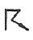
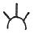
11. 알베도(alvedo)측정에 이용되는 일사계는?
12. 구름의 분류에 따른 종류의 연결이 틀린 것은?
13. 라이도존데에서 직접 관측하지 않는 기상요소는?
14. 고층대기 관측장비와 이들 장비가 발사하는 신호를 후방산란시키는 매개물로 잘못 짝지어진 것은?
15. 백엽상 주위(노장)에 잔디를 심는 가장 중요한 이유는?
16. 기압값의 보정 시 관측소의 중력이 표준중력보다 클 때 (A)와 작을 때 (B) 중력 보정값의 가감은?
17. 도플러 기상레이더에서 생산되는 원시자료가 아닌 것은?
18. 위성에서 탐지하는 화소의 반경이 4km에서 1km로 향상되었다면 공간 해상도는 몇 배가 향상된 것인가?
19. 우량계(수수구 직경 20cm)로 강우량을 수집한 결과 약 1L의 물을 얻었다. 강우량은 대략 얼마나 되는가?
20. 뷰포트 풍력계급에서 계급 2(light breeze)에 해당되지 않는 것은?
2과목: 대기열역학
21. 다음 선도 중 등온선이 곡선인 것은?
22. 건조공기의 기체상수를 Rd, 수증기의 기체상수를 Rv라고 하면,
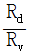
는 약 얼마인가?23. 기압의 고도에 따른 감소율(
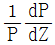
)을 나타낸 식은? (단,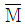
공기의 평균 분자량, R은 보편 기체상수, g는 중력가속도, T는 기온이다.)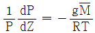
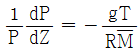
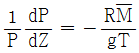
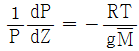
24. 물의 포화수증기압 및 포화수증기밀도에 관한 설명으로 틀린 것은?
25. 대기중에서 기압이 P1, P2 인 두 고도면의 층후 즉, 층의 두께는 가온도(또는 온도)와 어떤 관계가 있는가?
26. 1g의 공기괴에 대해 420K에서 10cal의 열을 가해 주었다. 엔트로피(entropy)의 변화량(Jg-1K-1)은?
27. 기온이 15℃일 때 상대습도를 구하기 위해 노점온도를 보니 11℃였다. 상대 습도는? (단, 11℃와 15℃에서 포화수증기압을 각각 9.7mmHg와 12.8mmHg 이다.)
28. e-folding 깊이가 5km인 임의의 등온대기의 기온은? (단, 이 행성대기의 기체상수와 중력가속도는 각각 150 JK-1kg-1와 8ms-2 이다.)
29. 포화단열과정에 관한 설명으로 적절한 것은?
30. 건조단열감율은 어느 식으로부터 유도되는가?
31. 초기의 기온 감률에 관계없이 공기층이 상승하여 포화된 후 안정한 경우를 무엇이라고 하는가?
32. 위단열(pseudo adiabatic)팽창을 할 경우 온위는?
33. 20℃에서 수증기압이 9hPa일 때 수증기의 밀도(kg·m-3)는? (단, 보편기체상수 = 8.314 Jmol-1K-1)
34. 정압비열 Cp가
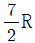
일 때 정적비열 Cv의 값은?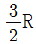
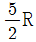
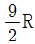
35. Skew T – log P 단열선도에 표시되어 있는 등치선만을 나열해 놓은 것은?
36. 기압이 1000 hPa이고 기온이 10℃인 공기덩이의 비체적(specific volume)은? (단, 비기체 상수는 287 J kg-1K-1 이다.)
37. 습윤단열과정(most adiabatic process)과 위단열과정(pseudo-adiabatic process)에 관한 설명으로 틀린 것은?
38. 다음 중 열역학 제1법칙을 나타낸 식은? (단, P는 압력, α는 비체적, R은 비기체상수, T는 온도, △W는 단위질량당 한 일, △U는 단위질량당의 내부에너지, △Q는 단위질량당 가해진 열량, V는 부피, m은 분자량, Cv는 정적비열이다.)
39. 기체상수가 189.0 JK-1kg-1인 기체의 분자량(kg kmol-1)은 대략 얼마인가? (단, universal gas constant는 8.3143 ×103 J kmol-1K-1 이다.)
40. 습윤공기의 상태방정식에 관여하지 않는 변수는?
3과목: 대기운동학
41. 다음 중 남북 방향의 대기 대순환에서 가장 뚜렷한 부분은?
42. 한랭이류가 나타날 수 있는 경우는?
43. 반경이 r인 원 주위를 Ω의 각속도로 회전하는 유체의 순환(Circulation)은?
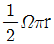
44. 지균풍에 관한 내용으로 틀린 것은?
45. 한 점에서 기온감률이 증가하는 경우는?
46. 700 hPa 이하의 고도에서 저기압 쪽으로 바람이 불어 들어가는 가장 가까운 이유는?
47. 운동방정식을 이루는 다음 항 중에서 규모가 가장 큰 항은?
48. 북반구의 상층일기도에서 기압골과 능의 축이 남서쪽에서 북동쪽으로 기울어져 있다. 순 각운동량의 운송 방향은?
49. 상대와도(
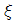
)와 순환(C)의 관계를 적절하게 표현한 식은? (단, A는 순환이 일어나는 임의 폐곡선의 면적이다.)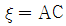
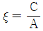
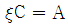
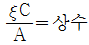
50. 구면좌표계(spherical coordinate)에서의 운동방정식을 대규모 공기의 운동에 적용하면 수직가속도 성분과 코리올리항을 무시할 수 있는데 이 때 얻을 수 있는 기본 방정식은?
51. 라니냐와 관련된 사항으로 옳은 것은?
52. 북반구에서 연직방향의 운동을 하는 물체에 작용하는 지구의 전향가속도(Coriolis acceleration)는?
53. 기압좌표계의 운동방정식에 관여하지 않는 요소는?
54. 경압대기의 성질에 속하지 않는 것은?
55. 대기중 로스비파(Rossby Wave) 유지에 중요한 기구는?
56. 코리올리 힘이 작용하지 않는 바람은?
57. 풍속장(Wind field)을 아래 그림과 같이 유선으로 나타내었을 때 다음 중 어느 것과 가장 관계가 깊은가?
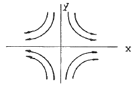
58. 정상적인 사이클론성 흐름에서 지균풍과 경도풍의 크기를 서로 비교해 보면?
59. 대기가 순압대기라고 할 때 공기덩어리가 적도에서 극 쪽으로 이동할 경우 나타나는 현상은?
60. 다음 중 중위도 저기압 시스템의 주된 발달기구(mechanism)는?
4과목: 기후학
61. 계절에 따라 바람의 방향이 바뀌면서 발생하는 몬순현상의 원인은?
62. 다음 중 탄소 저장소 상호 간에 탄소의 교환이 가장 활발하게 일어나는 것은?
63. 엘리뇨 현상의 특징이 아닌 것은?
64. 우리나라 직접적인 영향을 미치지 않는 기단은?
65. 동서지수(Zonal Index)가 클 때 알맞은 기후특성은?
66. 한랭다습하고 지표보다 차며 불안정한 기단은?
67. 쾨펜(Köppen)의 기후 기호와 그 설명이 옳지 않은 것은?
68. 연 강수량과 연평균 기온의 비(比)는?
69. 다음 온실기체 중 같은 양이 같은 기간에 존재할 경우 온실효과가 가장 큰 것은?
70. 클라이모그래프(climograph)는 어느 요소들의 월평균 값을 이용한 그래프인가?
71. 극기후(EF)는 최난월(最暖月)의 평균 기온이 몇 도인 등온선이 한계가 되는가?
72. 후빙기에 있었던 기후의 최적기(climate optimum)에 대한 설명으로 틀린 것은?
73. 적도 무풍대의 평균적인 위치는?
74. 기후의 변화는 대기만의 현상이 아니며 다양한 요소들이 상호작용을 하며 일어난다. 다음 현상 중 대기와 해양 사이의 상호작용으로 인해 발생하는 대표적인 현상은?
75. 온대 지방 대륙의 동안기후의 특징으로 옳은 것은?
76. 지중해성 기후지역이 아닌 곳은?
77. 다음 중 산풍(mountain breeze)이 가장 잘 발달할 수 있는 곳은?
78. 다음 중 우리나라 연평균 강수량의 범위로 가장 적절한 것은?
79. 다음 중 기후변화를 유발하는 정도가 가장 낮은 대기 성분은?
80. 태양에너지가 지구에 도달되는 과정에 있어 에너지 전달 방식으로 옳은 것은?
5과목: 일기분석 및 예보론
81. “푄”(Foehn)에 동반되는 현상과 무관한 것은?
82. 10종 운형 기호 중에서 적운을 나타내는 것은?
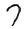
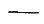
83. 지구상 유체의 강체회전 운동에서 와도를
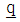
, 지구의 회전각속도를 ω라 할 때 다음 중 옳은 것은?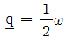
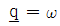
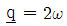
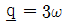
84. 북반구 중위도에서 한랭전선 통과 시의 풍향변화는?
85. 열대성 저기압이 발달하여 태풍(TY급)이 되려면 최대풍속이 얼마에 도달되어야 하는가?
86. 상당 순압모델(Equivalent barotropic model)의 특징이 아닌 것은?
87. 상층 일기도의 이용에 관하여 바르게 설명한 것은?
88. 다음 그림은 공기의 포화수증기압 곡선을 그린 것이다. 현재 기온이 T℃인 공기의 이슬점온도 Td가 t℃일 때 이 공기의 상대습도는? (단, 그래프의 세로축은 수증기압(hPa)이다.)
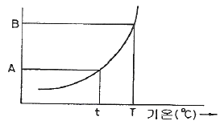
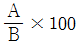
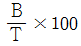
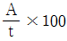
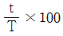
89. 다음 고층 관측자료에서 숫자 5.0 이 의미하는 것은?
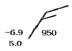
90. 우리나라의 장마전선 양쪽에 있는 각 기단은?
91. 우리나라에서 여름철에 자주 통과하는 저기압은 주로 어느 지역에서부터 이동하여 오는가?
92. Richardson's number가 풍속의 고도 경도에 대해 가지는 관계로 옳은 것은?
93. 지상 기상 전문에서 노점온도가 영하일 때 노점온도를 표시하는 방법은?
94. 온위를 정의하는 식은? (단, P는 기압, R은 기체상수, CP는 정압비열, T는 기온)
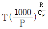
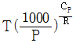
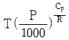
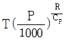
95. 다음 그림에서 한랭전선과 온난전선을 바르게 표시한 것은?
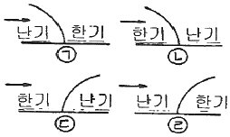
96. 안개가 끼기 쉬운 조건으로 잘못된 것은?
97. 600 hPa에서 와도장의 이류속도는 그 고도에서 풍속의 몇 % 정도의 속도로 이동하는가?
98. 전선에 대한 설명으로 틀린 것은?
99. 다음 중 온대성 저기압이 발생하기 가장 쉬운 곳은?
100. 지표 부근의 공기가 이 고도에 이르면 그 후에는 공기가 자동적으로 계속 상승하게 된다. 지표 부군의 공기괴가 지표의 가열로 에너지를 받은 후 단열적으로 상승하여 포화에 이르게 되는 이 고도는?